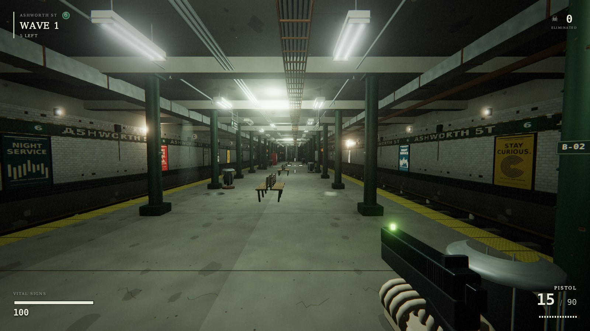
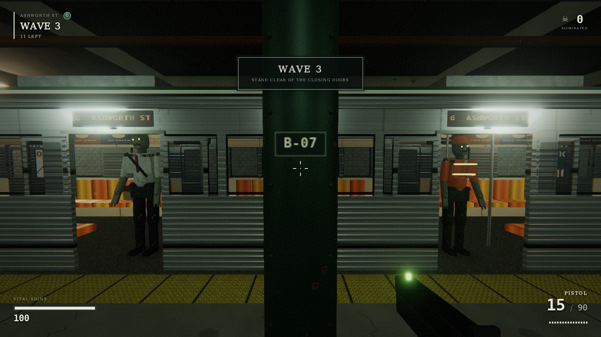

FROM THE FACTORY FLOOR · PLAYABLE PREVIEW
ASHWORTH ST 6
LAST STOPThe last train isn’t empty.
A subway survival game built by GPT-6 Astra inside BANTAM FACTORY.
Desktop browser · keyboard + mouse · headphones recommended

PLAY THE BUILDA DESIGN BECOMES A PLACE
More than a
pretty screenshot.
Explore the platform and mezzanine. Watch the train pull in, doors open, and passengers step out. Keep moving. Make every reload count.
Astra built the game from a detailed design inside the factory, then exercised it with browser tests and screenshot reviews.
This is a playable preview of the ongoing build. Snapshot and check record ↗
- A whole station
- Platforms, stairs, a mezzanine, and a four-car train with opening doors.
- Three weapons. Incoming waves.
- Pistol, carbine, shotgun. Animated enemies, headshots, ammo, reloads, and a survival score.
- Built in code
- Procedural geometry, textures, animation, and sound. Three.js powers the scene; Web Audio supplies the atmosphere.
- Checked in the browser
- Movement, combat, train behavior, keyboard and mouse controls, pause, death, and restart.

Your next stop.
WASD move · Mouse aim / fire · Shift sprint · R reload · 1 / 2 / 3 weapons · E interact · Esc pause
Play ASHWORTH ST ↗To play the download, unzip it and follow ABOUT.txt. Includes the game source and Three.js license.